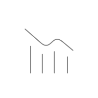
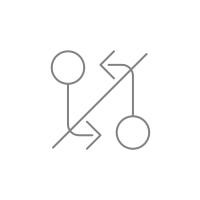
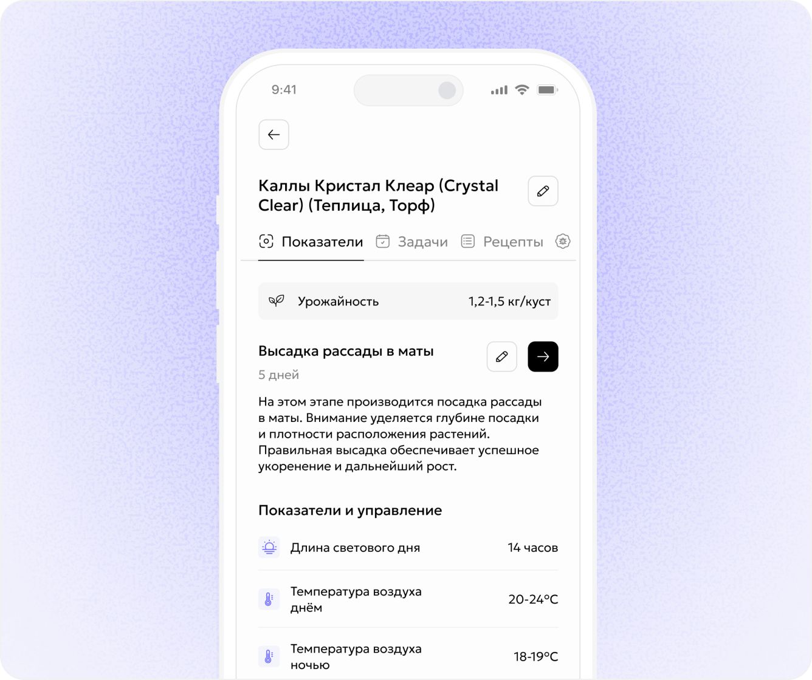
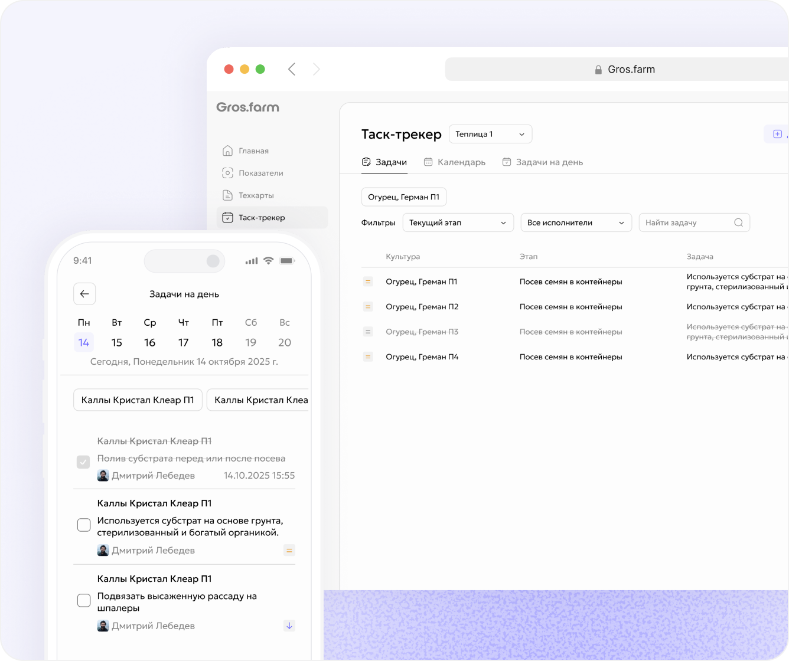
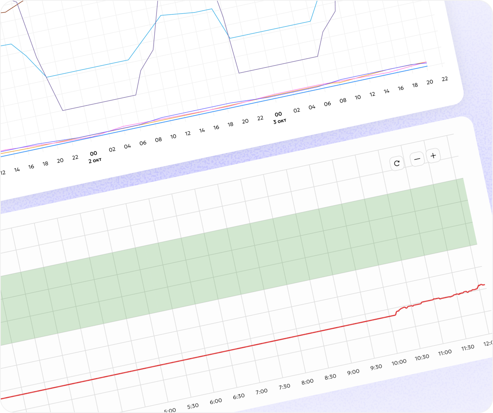
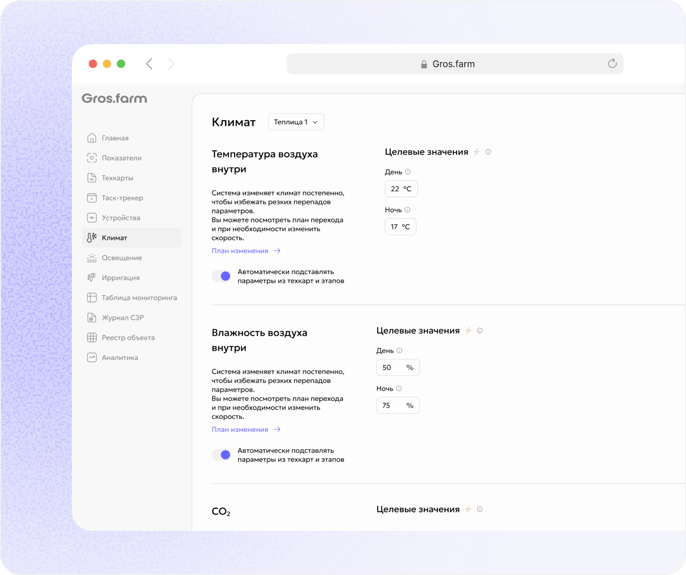

Технология зависит
от конкретных людей
Технологии хранятся в голове конкретных агрономов и теряются при смене команды
Gros.farm связывает этапы выращивания, нормы, задачи, аналитику и автоматику в единый производственный процесс.
Технологии хранятся в голове конкретных агрономов и теряются при смене команды
Нормы, задачи и инструкции не связаны между собой

План и факт сравниваются уже после проблем в цикле

Контроллеры исполняют команды, но не понимают этап выращивания
В Gros.farm техкарта - это не документ и не чек-лист.
Она задает:

Система понимает текущую фазу развития культуры
Для каждого этапа действуют свои параметры, задачи и рецепты
Фактические показатели сравниваются с нормами, а автоматика получает уставки

Работы создаются из этапа выращивания и сохраняют связь с процессом
Фото, комментарии, сроки и чек-листы всегда под рукой
Просрочки, статус работ и ответственность по каждому этапу
Gros.farm сравнивает фактические показатели с нормами текущего этапа выращивания, чтобы отклонения были заметны сразу в процессе работы.


Контроллеры и SCADA отвечают за надежное исполнение.
Gros.farm хранит технологию выращивания, анализирует данные и передает уставки с учетом текущего этапа.
Процессы перестают зависеть
от отдельных сотрудников
Технологию можно:
Техкарты, задачи, аналитика и автоматика - в одном процессе